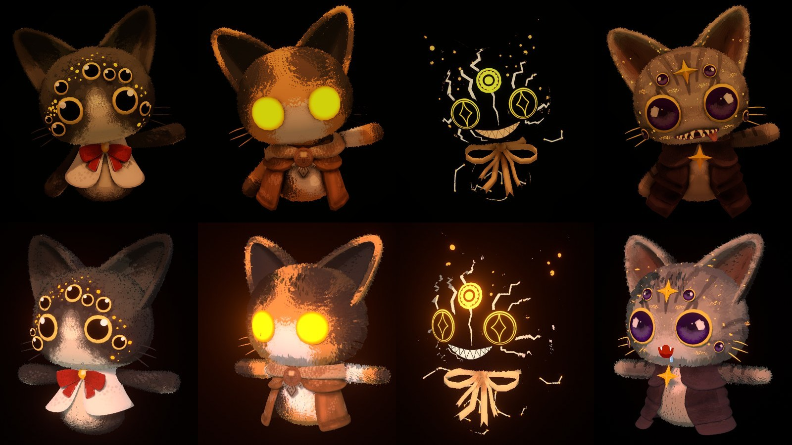
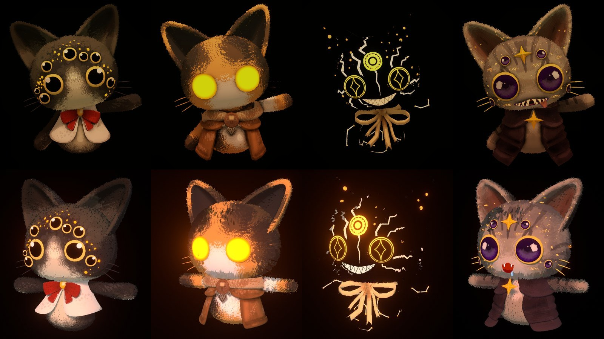
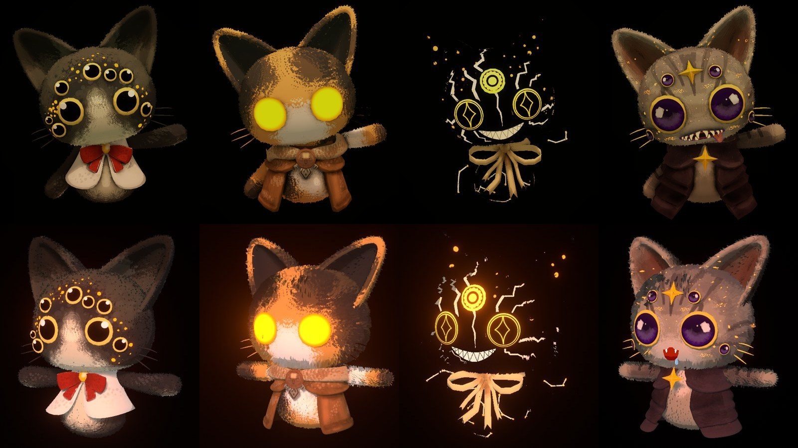
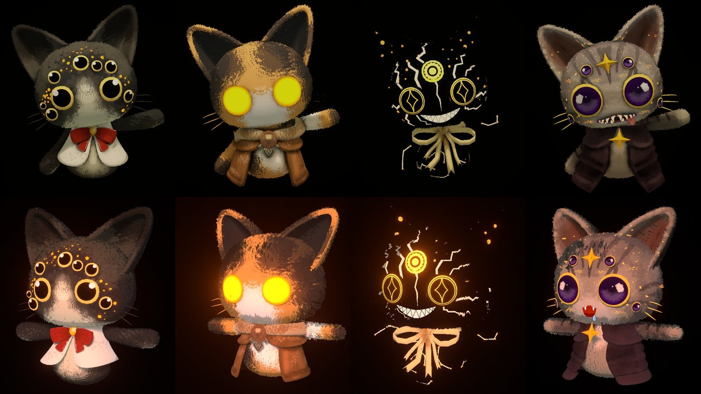

Déjà choisi au tour 1 : B (l'aplat n'est éclairé que par le jeu), H1 (halo inchangé), L2 (lumière plus chaude). Ta remarque : L2 est trop orangée en jeu.
La scène : vue assise, de jour, les quatre pelages sous la lumière de leur chat. En haut le jeu, en bas Blender pour comparer. Seule la teinte de la lumière change d'un cadre à l'autre, de L2 à l'ancienne crème.
Celle de la PR : orangée.

Un cran moins orange.

À mi-chemin entre L2 et l'ancienne.

Juste un peu plus chaude que l'ancienne.
La lumière d'avant la PR.
